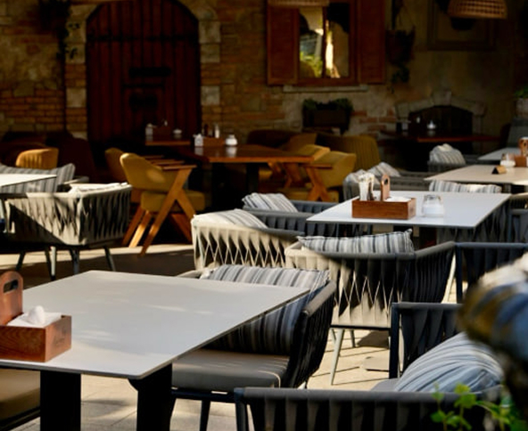

Ресторанний комплекс «Афаліна»
Море поруч. Смак у кожній миті. Ваш відпочинок на узбережжі Чорного моря.

Про наш комплекс
Місце, де море стає частиною вашого дня.
В «Афаліні» легко сповільнитися: обрати улюблену страву, відчути морський бриз і насолодитися розмовою за столом. Європейська кухня та морепродукти доповнюють затишну атмосферу на узбережжі.
День біля відкритого басейну, час для дитячих ігор чи свято в колі близьких — тут кожен знайде свій спосіб бути щасливим біля моря.
Відпочинок для кожного
Від тихого ранку біля води до свята, яке хочеться згадувати.
Ресторан та морепродукти
Європейські смаки, морські акценти та неспішні вечері з краєвидом.
Переглянути менюВідкритий басейн
Прохолода води, тепле сонце й відпочинок у власному ритмі.
Більше про басейнБанкетні зали
Особлива атмосфера для весілля, родинного свята чи зустрічі.
Спланувати подіюДитяча кімната
Простір для маленьких відкриттів, поки дорослі насолоджуються миттю.
Для маленьких гостейМиті, заради яких варто приїхати
Натисніть на фото, щоб відкрити галерею у повноекранному режимі.


Відгуки наших гостей
Щирі історії тих, хто вже провів свій день біля моря в «Афаліні».
«Неймовірна тераса прямо біля води! Паста з чорноморськими мідіями та креветками — просто шедевр. Обов'язково повернемося на захід сонця.»
«Відпочивали всією родиною біля басейну. Вода чиста, зручні шезлонги, а діти були в захваті від ігрової кімнати та аніматорів.»
«Святкували тут річницю весілля в банкетному залі. Бездоганний сервіс, свіжі морепродукти та уважний персонал. Усім гостям дуже сподобалось!»
«Найкраще місце у Чорноморську для спокійного сніданку з видом на море. Швидке бронювання через сайт і приємна музика ввечері.»
«Дуже сподобалось бунгало біля басейну та авторські коктейлі з барної карти. Відчуття, ніби побувала на європейському курорті!»